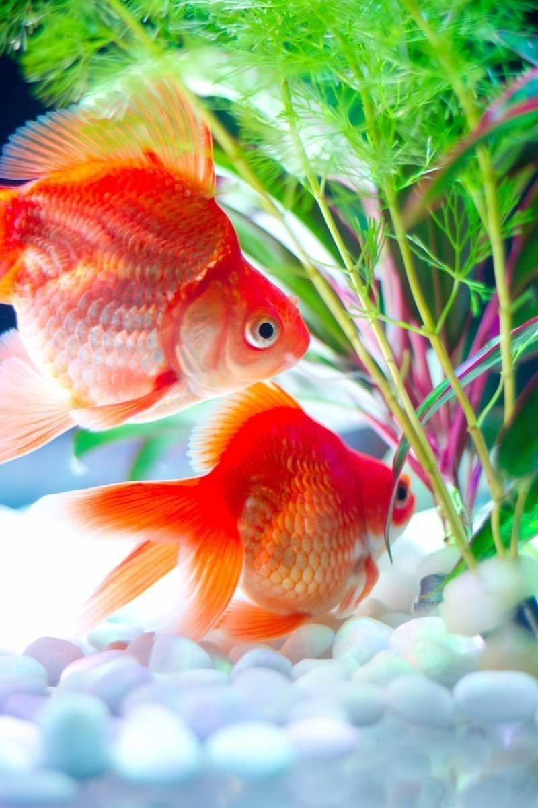

純粋な心。それはどんなに年を重ねても忘れてはならない心。
しかし、人も金魚も世に慣れてくると他者の悪意に殊更敏感になってしまい、受ける必要のないダメージを受けてしまう時がある。私も最近、心の隅にそんな悪魔が巣食うようになってしまった。
だが、そんな心の老化には未だ縁遠く、まさに透き通った瞳を持つ女の子は、間違いなく私を救ってくれた天使……いや、女神様であった。
私たちの傷は女の子の兄の治療の甲斐もあり回復に向かっていた。
「つくづく俺らはついているな」
ナイデルはすっかり元気になった屈強な体を弄ぶかのように水中を旋回している。
「天は僕らのことを見放してはいなかったってことですね」
ヨスケも幸せを噛み締めるように口を開いた。
「そうだな。しばらくは身の危険を感じることはないだろう」
平穏な日々。それは随分と久しい、懐かしい感覚だった。
しかし、そんな平穏は意外な形で姿を変えた。数日後、いつものように女の子が赤いランドセルを机に置くと、何だか忙しく準備をしている。
「何だ、何が始まるんだ？」
体がなまらないようトレーニングを欠かさないナイデルが横目で女の子を見ている。
「まさか来客か？」
「もしかしたら男かもしれないよ」
ヨスケがいつものように調子よく話に割り込む。
「まさか。まだ子どもだぞ。そんな訳がないだろう……」
と私が言い返したその時、ぼさぼさ頭の男が部屋の中に入ってきた。
もはや私たちは唖然とその様子を眺めるほかなかった。
私は怒りを覚えていた。大の男がなぜこんな小さい女の子の部屋に。そして、ふとあの女のことを思い出した。おい、まさか私たちはここで偽りの愛を見せつけられるのではなかろうな！？
まだぼさぼさ頭でだらしのない後ろ姿しか見ていなかったが、こんな風貌の男だ。どうせろくでもない野郎だ。そう心の中で決めつけていた。
そもそも、なぜこんなやつを部屋にあげたのだ。心の中は純粋さとは程遠い疑心という悪魔にすっかりかき乱されていた。
しかし、ことは懸念していたようには進まなかった。
「先生、この問題ってどうやるの？」
女の子とぼさぼさ頭の男は二人して机に向かい作業をしている。
それに先生だと。となるとこの男、女の子の師ということか。ふむ。なら大丈夫そうだな。私はとりあえず安心した。
だが、この男の声どこかで聞き覚えがある。女の子に先生と呼ばれ、頼りがいのある声を出してはいるが、時折見せる上ずった声。何かが引っかかる。
やがて女の子と男は作業を終えた様子で机の上を片付け始めた。すると、女の子は思い出したように水槽の方へ駆け寄ってきた。
「そういや先生！ 最近金魚飼ったの！」
「き、金魚！？」
男はこれまで以上に上ずった声を出した。金魚が苦手なのだろうか。男は女の子に言われ仕方なく、といった様子でこちらに寄ってきた。
この時、私はようやく、あの日どこかに消えた飼い主の顔をはっきり見たのである。
飼い主は口を手で押さえ、驚いた顔をした。そして、何とか声を出さないようにして、水槽をコンコンと叩いた。
当然それには反応しない。いや、私の方もまさかの再会に体が動かなかったという方が正しいだろう。ナイデルとヨスケもいちいち反応するはずもなく、飼い主はショックを受けた様子で頭を抱えた。
その後も、飼い主は決まった時間に女の子の部屋にやってきては二人して机に向かって作業をしていた。
飼い主はこちらを意識しないようにしつつも、チラ見を繰り返している。そんな姿に女々しさを感じた。じれったいやつだ。
思わぬ飼い主との再会によって、あることを思い出した。
やつはこれまでどこに行っていたのだ。あの女とはどうなったのだ。また、あの女は金魚ハンターに裏切られた後、どのような生活を送っているのだ。そして、メイは今頃どこで何をしているというのだ。
この際、私自身の平穏などどうでもいい。彼らの行く末を見届けなければ、私は死んでも死にきれない！
私はその決意をナイデルとヨスケに伝える必要があった。
ある時、緊張した面持ちで二人に話を切り出した。
「私はここを離れ、もうじきやってくるあの男のもとへ行かねばならない」
言葉を選びながら、私はそう言った。
「えっ？ 何で？」
ヨスケは単刀直入に質問する。その顔には疑問を抱える少年のような純粋さが見て取れた。
隣を見ると、ナイデルは微笑んでいる。その目には優しさと親しみが滲んでいる。
「初めて会った時、お前は強そうに見えなかったが、奥底にある熱い魂を感じたんだ。今時珍しいやつだなって思ったよ」
ナイデルの目はこれまでにないほど輝いているように見えた。
「結果、賭けてみてよかった。おかげで忘れかけていたものを思い出すことができた」
「こちらこそ世話になった。あんたがいなけりゃ、今頃あの爺さんの思いのままになっていたはずだ」
ナイデルの思いに答えるように返答する。
「熱い場面に水を差すようだけど、何であの男のもとに」
「それを聞くのは野暮ってやつさ。生きてりゃ言えない事情くらいある」
ヨスケはナイデルにいなされた。私はナイデルの気遣いに助けられていた。
「俺はお前を忘れない。だから、お前も俺らを忘れるな」
ナイデルは力強く言った。目頭が熱くなっていた。
「当たり前だ」
私たちは笑い合った。ヨスケも不服そうではあったが、笑顔を見せてくれた。
数刻後。飼い主が女の子の部屋にやってきた。相変わらずこちらをチラチラと見ている。それに合わせて、私は大げさに水槽の中を駆け回った。すると、飼い主は驚いた様子で目を見開いた。
女の子がトイレに行くと、飼い主はその隙を見計らってこちらにやってきた。そして、少し考える素振りを見せ、私に話しかけてきた。
「死のうとした時にお前が必死に飛び跳ねているのを見て、思ったんだよ。こいつ愛すら知らないくせに、愛を失って死のうとしている人間を煽ってやがるなって。さすがの俺も金魚に馬鹿にされるのはご免だからね」
飼い主は例の如く私を水槽越しになぞる。運命を賭けた行動をそんな風にとらえていたのか。やはりこいつは正真正銘の大馬鹿者だ。
「でも、よかったな。ここなら俺と住むより断然いい暮らしができるぞ。お前はついている」
やはり何も分かっちゃいない。腹の底からふつふつと怒りが湧いてくるのを感じる。
「じゃあな。俺は仕事でここに来るが、こうして話すのも最後だ。幸せにな」
そう言って飼い主は机の方へ戻ろうとしている。待て！ そうやっていつも勝手に結論づけるな！ 私は咄嗟に水槽上部まで昇り、尾びれで水槽の水面を揺らした。ぴちゃぴちゃと小さな音ではあったが、何とか飼い主の耳にまで届いた。
飼い主は振り返って私を見た。私も飼い主を見た。
「まさかお前……」
飼い主は立ち尽くしていた。どれくらいの時間が過ぎただろう。やがて飼い主はトイレから帰ってきた女の子に何か話し始めた。
女の子は私だけを譲ってくれと何度も頭を下げる飼い主を見て困惑しながらも、最終的には首を縦に振った。女の子は私を丁寧に透明なビニール袋に入れると、小さく微笑んだ。
「短い間だったけど、金魚さんありがとう。名前もまだ決めてなかったけど幸せにね」
私も心から女の子と私たちを釣り上げ治療してくれた女の子の兄の幸せを願った。もちろん、ナイデルとヨスケの幸せも。
「いつかまた会おう」
私は心の内で彼らにそう別れを告げた。
飼い主の家は多少散らかっているようにも見えたが、大きくは変わっていなかった。私は懐かしい水槽の中へと入れられた。そこがいつもより寂しく感じたのは、きっと私に大切な仲間ができたからだろう。
しかし、そこは決して私だけの空間ではなかった。なんとそこには、いつかの美しい赤と白のまだら模様を持つあの金魚がいたのである。